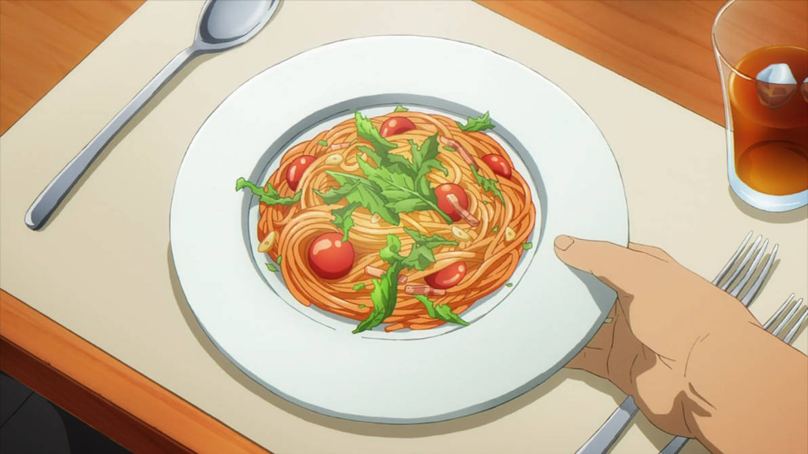

Simple Basil Pasta

Description
This simple dish takes 20 minutes to prepare and even
less time to eat. It's great for beginners, or busy
schedules with picky stomaches. The ingredients are
listed below:
- Linguine Pasta
- Roma Tomatoes
- Garlic
- EVOO
- White Vinegar
Steps
- Bring a pot of water to a roaring boil
- Place linguine in until al dente
- Cut roma tomatoes in half
- Toss into a pan with EVOO, cook until squishy
- Add white vinegar to taste
- Mince 3 cloves of garlic and throw them in
- Drain pasta and add it to the sauce
- Top it with basil